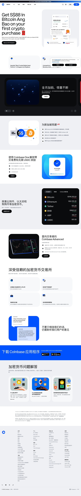

Coinbase 主题
Coinbase 的 Design.md 主题展示，围绕金融科技、媒体内容、极简清爽、安全合规组织页面。
Crypto exchange. Clean blue identity, trust-focused, institutional feel.
金融科技媒体内容极简清爽安全合规Web3数据仪表盘数据分析B2B 产品运营监控专业工具高密度信息

来源
- 来源
- getdesign.md
- 镜像
- github:VoltAgent/awesome-design-md
- 网站
- https://coinbase.com/
- 详情
- https://getdesign.md/coinbase/design-md
色板
#0a0b0d: #0a0b0d#0052ff: #0052ff#003ecc: #003ecc#a8b8cc: #a8b8cc#5b616e: #5b616e#7c828a: #7c828a#a8acb3: #a8acb3#dee1e6: #dee1e6#eef0f3: #eef0f3#ffffff: #ffffff#f7f7f7: #f7f7f7#16181c: #16181c
字体
display: Coinbase Displaybody: Coinbase Sansmono: Coinbase Monohints: Coinbase Display,Coinbase Sans,Coinbase Mono,Roboto,Geist Mono,Geist,Inter
圆角
control: 12pxcard: 24pxpreview: 24pxpill: 100pxsource: design-md
间距
xxs: 4pxxs: 8pxsm: 12pxbase: 16pxmd: 20pxlg: 24pxxl: 32pxxxl: 48pxsection: 96pxsource: design-md
使用建议
建议
- 建议：Reserve {colors.primary} (Coinbase Blue) for primary CTAs, wordmark, brand-glyph illustrations, inline accent links。
- 建议：Set every CTA as {rounded.pill} (100px); every asset glyph as {rounded.full}。
- 建议：Keep CoinbaseDisplay headlines at weight 400。
- 建议：Use the dark/light band rotation as page rhythm。
- 建议：Render every numerical value in CoinbaseMono via {typography.number-display}。
避免
- 避免：introduce a secondary brand color. Coinbase Blue is the only action color; trading green/red are semantic-only。
- 避免：bold display copy — display sits at weight 400; bolding shifts the brand voice。
- 避免：add drop shadow tiers — system has one shadow tier。
- 避免：use sharp {rounded.none} (0px) on CTAs。
- 避免：mix CoinbaseDisplay and CoinbaseSans inside the same headline。
查看 DESIGN.md